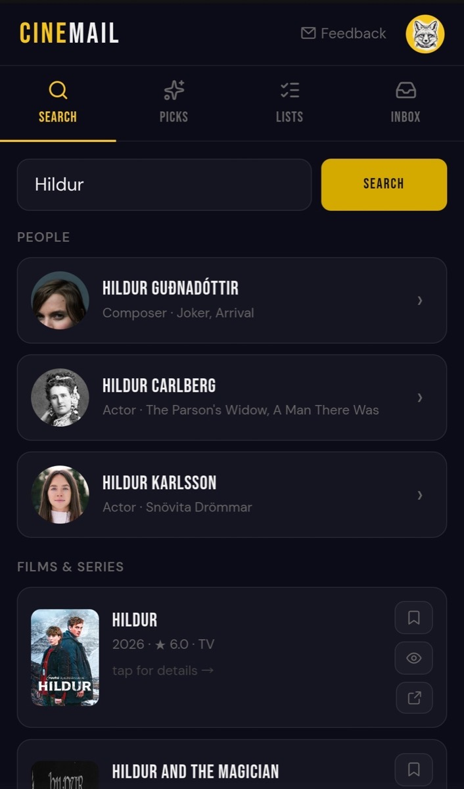
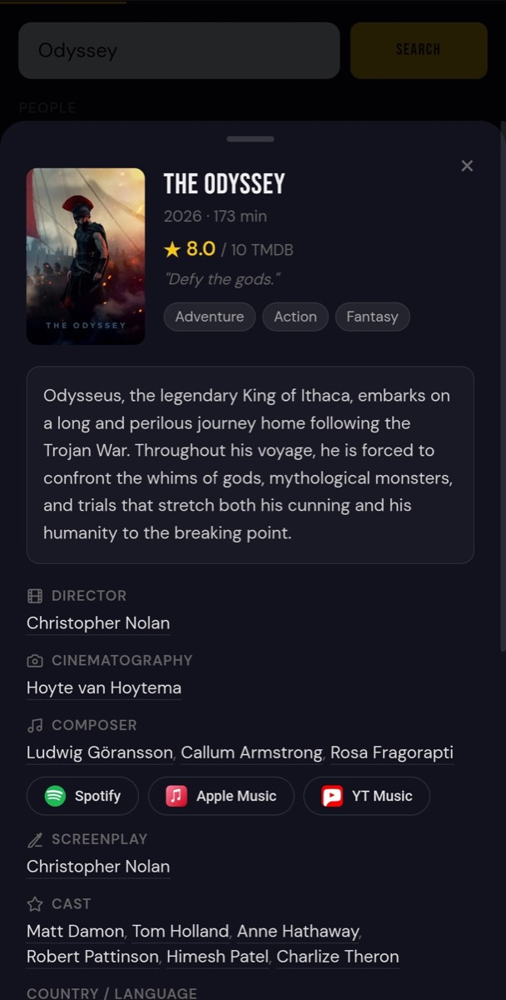
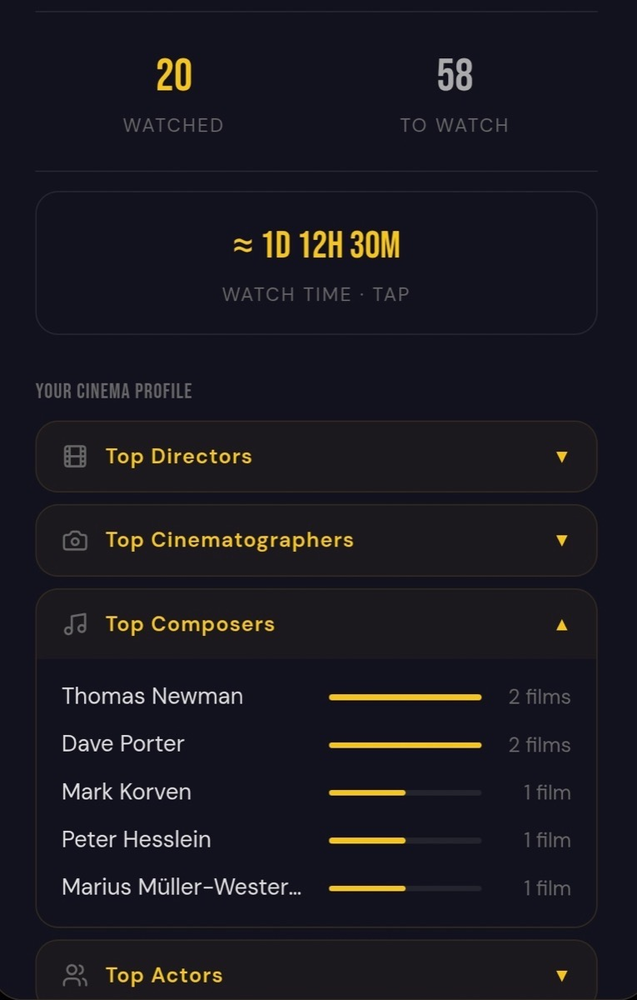
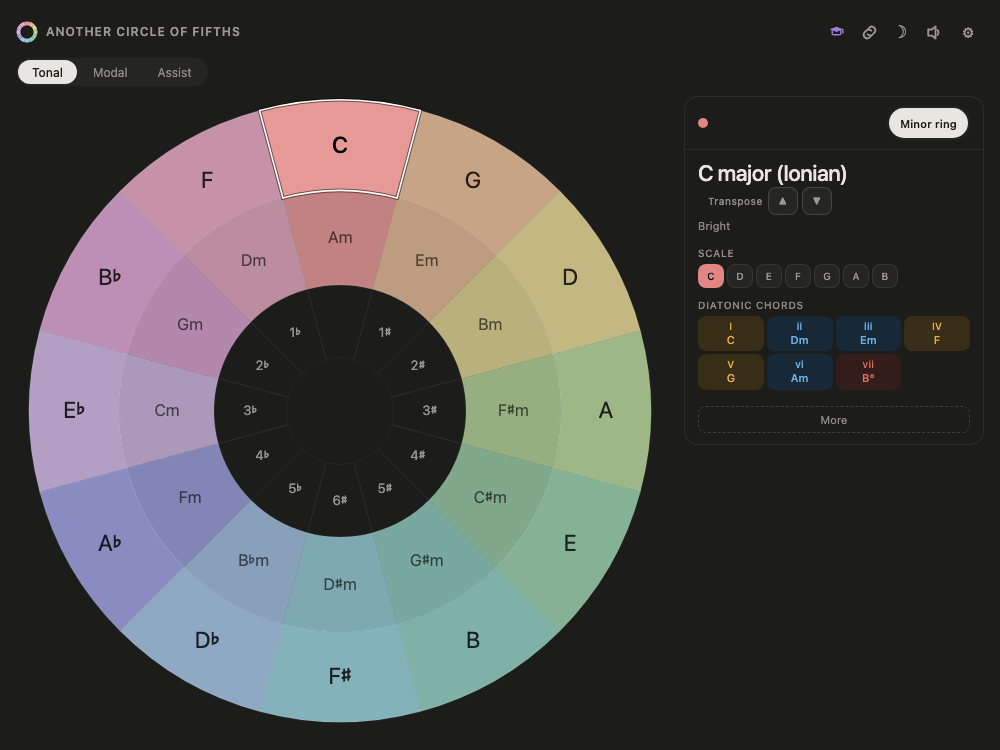
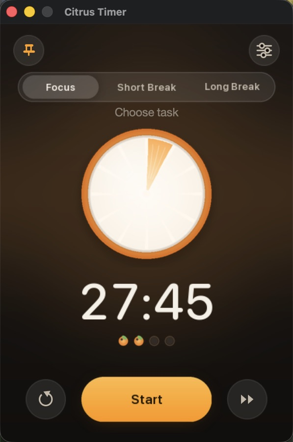
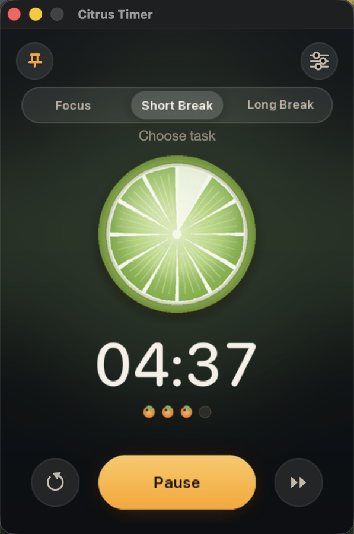
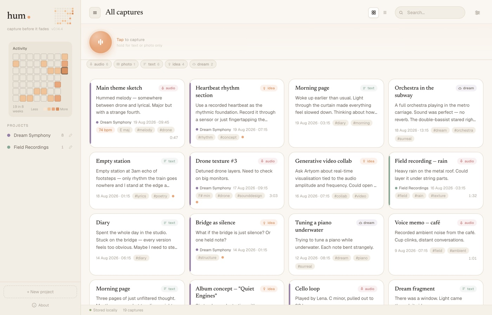
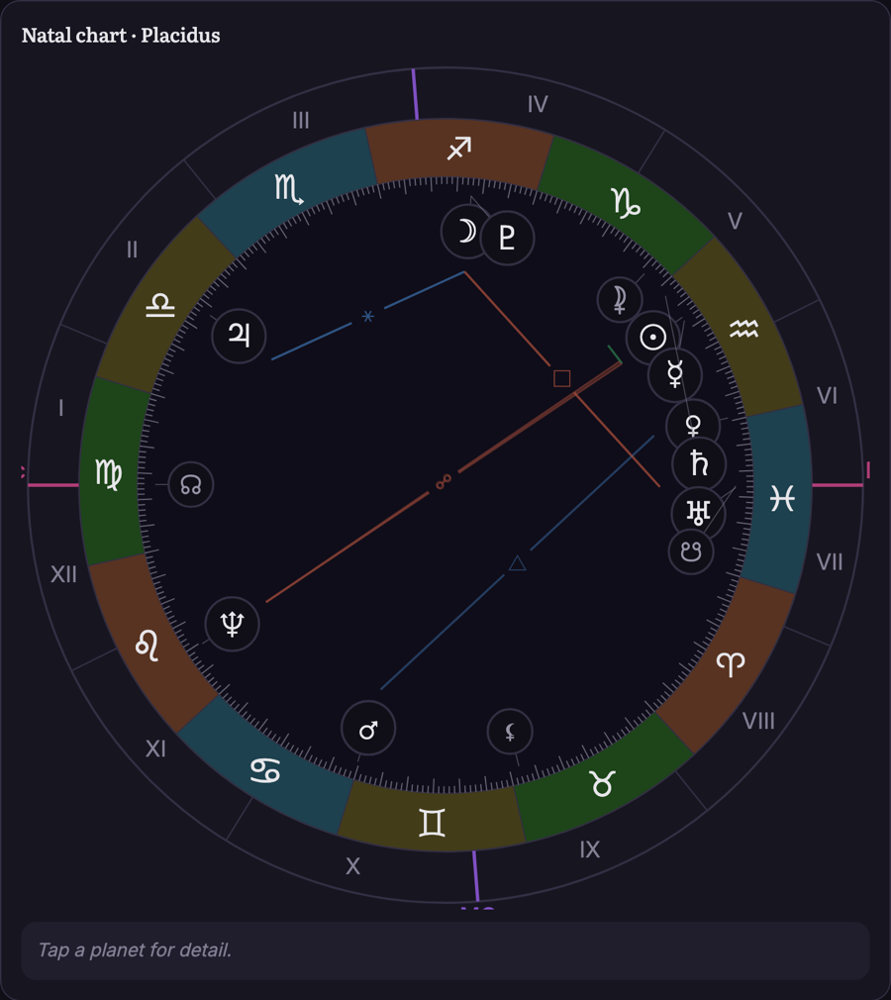
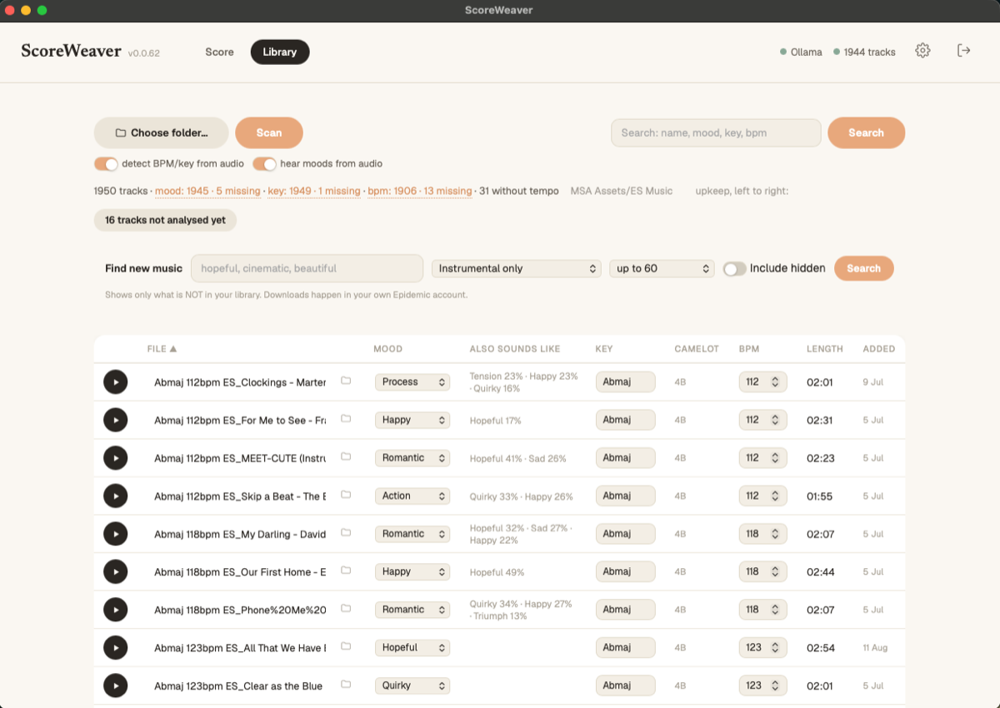
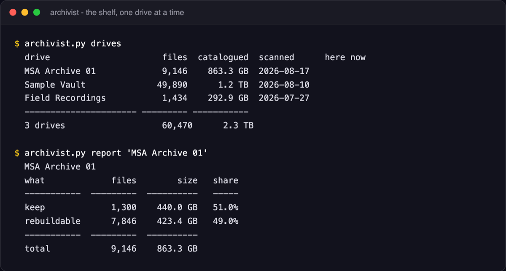

Daniel Fainberg
Indie developer and visual artist building small, focused apps for the things I love - cinema, music, everyday life experiences.
I come from a visual background - photography, videography, video art for theatre productions. I've spent years curiously observing how images, sound and rhythm carry human experience, emotion and feeling.
Currently studying MA Professional Media Composition at Arts University Bournemouth, where I'm learning to write music for film.
Under dafaspace I make apps that I'd want to use myself, and I really do use them every day. I'm genuinely happy when I see my apps make someone's life a little easier or more joyful. I believe in people and in meaningful human connection - so nothing makes me happier than when like-minded people find each other and that small miracle of real interaction happens.
Projects








In development
Working tools rather than products. Listed so you can see what I actually spend my days on.

